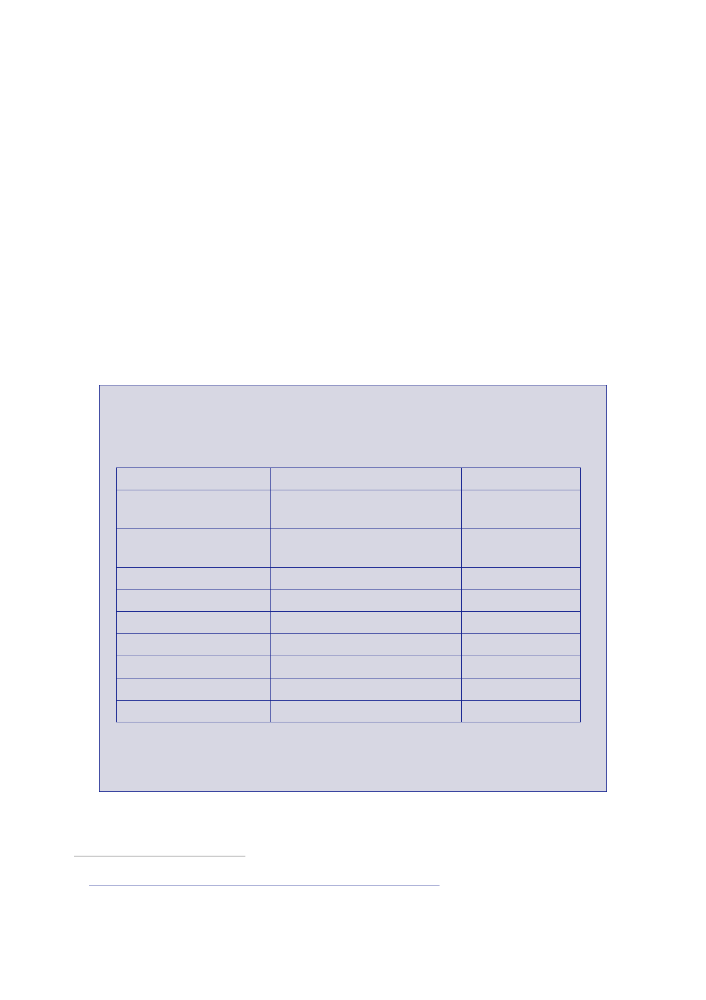

The Report
of the Iraq Inquiry
1082.
On 23 August,
a JIC Assessment of the militias stated:
“Violence
in Iraq is part of a vicious circle: deteriorating security has led
to a
proliferation
of militias, in turn fuelling further violence. Prime Minister
Maliki is […]
unable to
confront the militias, fearing a violent backlash that would
threaten the
break‑up of
the Shia political coalition (the UIA). Without significant
progress on the
National
Reconciliation Plan and a sustained improvement in the security
situation
there will
continue to be little appetite for the MNF plan for the
Disarmament,
Demobilisation
and Reintegration of the Iraqi militias.
“Many
militias are sectarian based and competing with the Iraqi state’s
security
forces to
provide security and protection for their own communities. They
are
undermining
government authority. Some elements are engaged in violent
attacks
against
their political and sectarian opponents and coalition forces. In
some cases,
the
distinction between the armed gangs and the Iraqi Security Forces
(ISF) is
Name
Associated
political party
Size
Patriotic
Union of
Kurdistan*
Kurdistan
Democratic
Party*
Badr*
Jaysh
al‑Mahdi
Iraqi
Islamic Party*
Iraqi
Hizballah*
Jaysh
al‑Dawa*
Army of the
Guardians
Thar
Allah
Patriotic
Union of Kurdistan
Kurdistan
Democratic Party
Office of
the Martyr Sadr
Iraqi
Islamic Party
Dawa
80,000 to
90,000
10,000 to
13,000
10,000
1,900
1,000
1,000
500
200
* Denotes a
militia recognised in CPA Order No.91 as having accepted the terms
and
timetable
for reintegration, the process of which was expected to be
completed by
998
JIC
Assessment, 23 August 2006, ‘Iraq: The Problem With
Militias’.
999
Supreme
Council for Islamic Revolution in Iraq, then Islamic Supreme
Council in Iraq.
1000
Telegram
290 Iraq Rep to FCO, 7 June 2004, ‘Iraq: Militias
Order’.
304